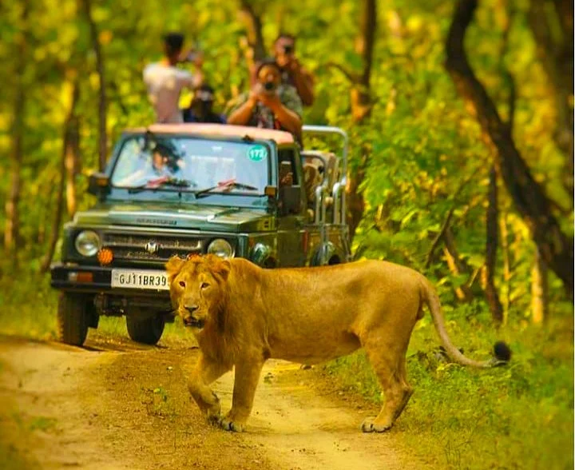
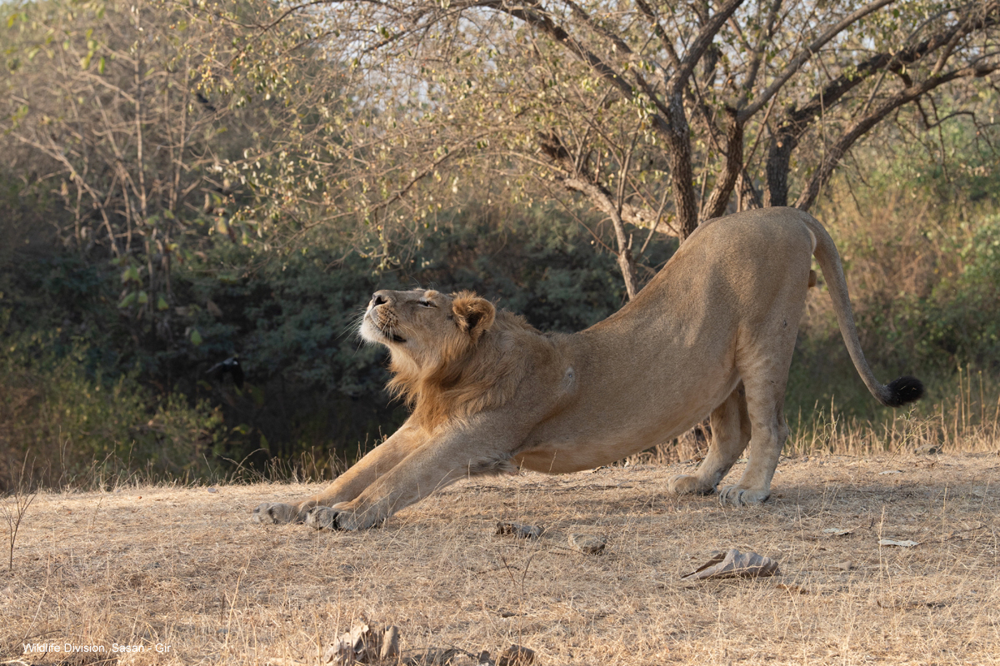

Location: Sasan Gir, Gujarat
Nearest City: Junagadh
Safari Type: Gypsy Jeep Safari
Duration: 1 Hour (approx.)
Timings: 8:00 AM to 11:00 AM, 3:00 PM to 5:00 PM
Best Season: December to March
Official Booking: girlion.gujarat.gov.in
Devalia Safari Park, also known as the Gir Interpretation Zone, is a fenced area located near Sasan Gir. It was created to offer visitors a quick and safe glimpse of Gir’s wildlife, including Asiatic lions, without the need to enter the main forest area.
The park spans over 4 square kilometers and is an ideal destination for families and wildlife photographers.

The Devalia Gypsy Safari is conducted in open jeeps (Gypsies) accompanied by trained guides. The route covers grasslands, water bodies, and forest patches where visitors can easily spot lions, leopards, deer, and various bird species.
You can book the Devalia Gypsy Safari through the official Gir Online Booking Portal. Choose “Devalia Park Safari” while selecting the safari type. Visitors must carry ID proof and the booking confirmation printout at the time of entry.
Address: Devalia Safari Park, Talala, Sasan Gir, Gujarat 362135
Contact: +91 2877 285540 (Forest Department Office)
Official Website: https://girlion.gujarat.gov.in/